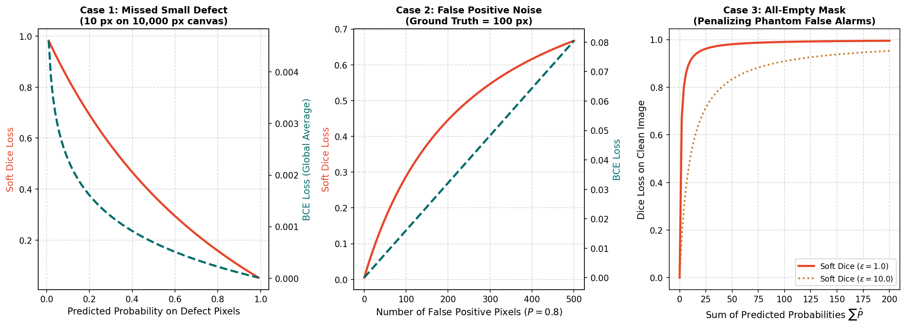

Differentiable Soft Dice Loss & Numerical Smoothing
(Milestone 3 · Question 5 Study Guide)
1. Sparse Foreground and the Objective
A model can attain high pixel accuracy on a sparse-defect dataset by predicting background too often. This does not make all-background prediction the mathematical optimum of BCE: a missed positive pixel still has a nonzero logit gradient. At an exactly zero predicted probability on a positive target, ideal BCE is unbounded. The practical concern is imbalance in aggregate contributions and shared-parameter updates, not an absence of a foreground penalty.
Measure class and pixel distributions yourself. This guide's numerical examples are fictional and reveal no competition statistics.
2. From Hard Overlap to a Differentiable Loss
Binary Dice compares a predicted set \(X\) and target set \(Y\):
Thresholding probabilities creates a step function, so hard Dice is unsuitable as a direct differentiable training loss. In the assessment's Soft Dice, use probabilities \(p_i=\sigma(z_i)\):
Compute three quantities before substituting: intersection \(I=\sum p_i y_i\), predicted mass \(P=\sum p_i\), and target mass \(T=\sum y_i\). Then \(L_D=1-(2I+\epsilon)/(P+T+\epsilon)\).
Reduction matters. The supplied SoftDiceLoss flattens all batch, channel and spatial dimensions into one global ratio. It is not an average of per-image or per-class Dice losses. Document that reduction when comparing implementations; a clean image inside a mixed batch is coupled to positives elsewhere in the batch.
3. What Smoothing Changes
With \(\epsilon>0\), an entirely empty reduction (\(P=T=0\)) gives Dice 1 and loss 0. Without smoothing the ratio is undefined. Smoothing also changes losses and gradients for small objects; its numerical value is part of the objective, not just a harmless implementation detail.
Smoothing does not guarantee stable optimization under every probability distribution. Read Guide 7 to distinguish the value of a loss from its gradient.

These are synthetic probability sweeps, not training results. The first two panels use different y-axis scales for BCE and Dice, so compare trends rather than line heights. A steep-looking loss curve does not establish a steep logit gradient.
4. Worked Practice with Different Inputs
Use a fictional 20-pixel patch with 4 positives, smoothing \(\epsilon=1\).
Model U predicts 0.2 at every pixel. Then \(I=4\cdot0.2=0.8\), \(P=20\cdot0.2=4\), and \(T=4\). Thus:
Model V predicts 0.75 at the four positives and 0.05 at the sixteen negatives. Then \(I=3\), \(P=3+0.8=3.8\), and \(T=4\):
Even small background probabilities contribute to \(P\). Foreground confidence contributes both to \(P\) and to the overlap numerator. This explains the distinct effects of missed foreground and background leakage.
Practice: Model V now predicts zero on background. How does the loss change?
Now \(P=3\), \(I=3\), \(T=4\), so \(L_D=1-7/8=0.125\). Removing background leakage improves overlap without changing foreground confidence. These practice values differ from the assessment.
5. Verify the Practice Calculation
import torch
p = torch.full((20,), 0.2, dtype=torch.float64)
y = torch.zeros_like(p)
y[:4] = 1
loss = 1 - (2 * (p * y).sum() + 1) / (p.sum() + y.sum() + 1)
print(float(loss))This probability-based snippet is for arithmetic only. The official loss accepts raw logits and applies sigmoid internally. Applying sigmoid before calling that loss would apply it twice.
6. Guiding Hints and Assignment Task
- Read Question 5.
- For each assessment model, calculate \(I\), \(P\) and \(T\) using the question's own population and probabilities.
- Substitute into the specified smoothed formula; retain precision until the final rounding to four decimal places.
- Report
loss_model1, loss_model2. Do not reuse the practice patch's losses.